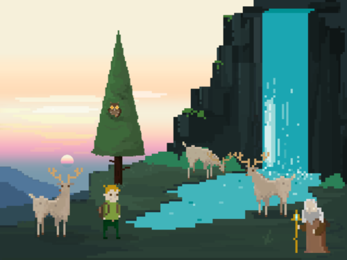
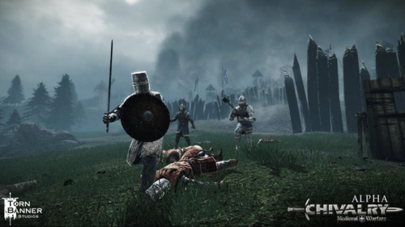
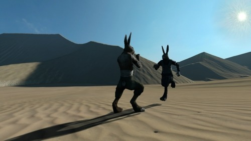
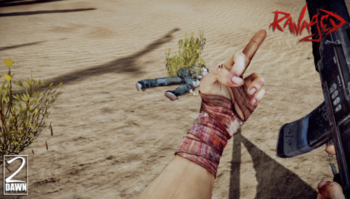
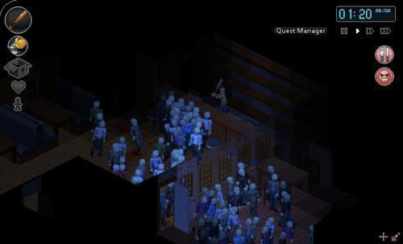

Решил написать немного о играх, которые с нетерпением жду и на которые возлагаю большие надежды. Уповаю, что они оправдают все мои ожидания. Конечно же, речь пойдёт о indie-играх, о шести независимых играх: от текстовой адвенчуры до постапокалиптического Battlefield. Ну-с.

Начну с малого, но очень интересного проекта — Incursion. Это текстовая адвенчура, исполненная в ностальгическом пиксельном стиле, под сопровождением потрясающей музыки и хорошего юмора. Расписывать дальше о игре не буду (не умею), так как лучше всё-таки поиграть в демо-версию и насладиться (пока лишь) маленькой частью мира Incursion.

Какое-то время тема средневекового шутера часто мелькала перед глазами, в частности, War of the Roses и Chivalry: Medieval Warfare. Медленно набивая мне оскомину, они так же медленно пробирались к рубежу моего интереса, и, перевалив его, наконец-то оккупировали места в этом списке. Про War of the Roses я уже упоминал , а про Chivalry узнал почти сразу, и что-то никак не получается решить, что мне более симпатичнее. Официальные сайты: вот и вот .

Я не располагал игры в какой-нибудь приоритетной последовательности, поэтому стоит сказать, что если составлять такой рейтинг, то Overgrowth занимала бы вторую строчку (про первую строчку будет написано ниже). Заинтересованность проявилась с первого взгляда, первого взгляда на потрясающе реалистичную (насколько это возможно для антропоморфных животных) боевую систему, в симбиозе с физикой и открытым миром. Оценить можно, посмотрев, например, это небольшое видео . Разработчики ведут блог , также есть веб-комикс по теме. Кстати, предшественником является не менее интересная игра под названием Lugaru .


Project Zomboid — настоящий симулятор выживания в зомби-апокалипсисе. На вооружении у нас всё, что мы сможем найти в заброшенных домах, на складах, магазинах или в мусорных баках. Заколачиваем двери и окна, строим баррикады, запасаемся провизией, ищем выживших и сотрудничаем с ними, или убиваем их в надежде найти что-то жизненно нужное, боремся от одиночества, депрессии, скуки, болезней — делаем всё, чтобы выжить. Но рано или поздно мы всё равно умрём. И напрашивается только один простой вопрос — как ты умрёшь? Сойдёшь с ума от одиночества? Погибнешь от укуса? Или, может быть, доблестно отбиваясь от орды голодных зомби? Это и есть та игра, которую я бы поставил на первое место в рейтинге ожидания. Игра в настоящее время находится в альфа-версии, релиз, думаю, ещё не скоро, но можно поиграть в демо-версию или сделать как обычно. Это пока единственная игра, которую я приобрёл. И пока мой рекорд выживания это — 14 дней. Больше информации о игре.